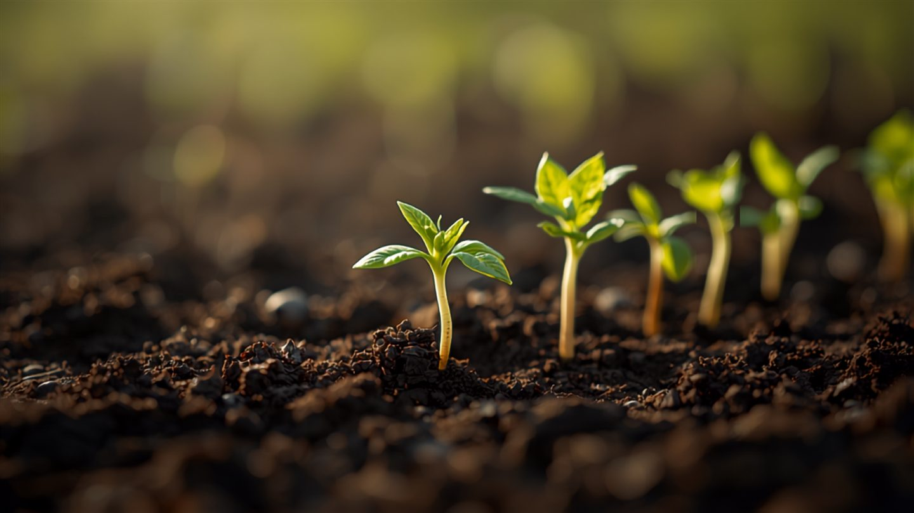

Gemüse-Pflanzkalender: Was du in welchem Monat säen und pflanzen kannst
Die häufigste Frage im Gemüsegarten ist auch die einfachste: Was kann ich jetzt eigentlich pflanzen?
Die meisten Kalender beantworten das mit einer unübersichtlichen Tabelle über zwölf Spalten. Hier bekommst du zuerst die Übersicht – und dann die drei Faustregeln, mit denen du sie nicht mehr brauchst.
Der Pflanzkalender auf einen Blick
Freiland, mitteleuropäisches Klima. „Vorziehen" heißt: drinnen auf der Fensterbank vorkultivieren.
| Gemüse | Vorziehen (drinnen) | Aussaat / Pflanzung (Freiland) | Ernte |
|---|---|---|---|
| Radieschen | – | März–September | 4–6 Wochen später |
| Pflücksalat | Feb–März | März–August | Mai–Oktober |
| Möhren | – | März–Juni | Juni–Oktober |
| Erbsen | – | März–April | Juni–Juli |
| Buschbohnen | – | Mai–Juni | Juli–September |
| Tomaten | Feb–März | Mitte Mai | Juli–Oktober |
| Gurken | April | Mai | Juli–September |
| Zucchini | April | Mai | Juli–Oktober |
| Paprika | Feb–März | Mitte Mai | August–Oktober |
| Kohlrabi | Feb–März | März–August | Mai–Oktober |
| Rote Bete | – | April–Juni | Juli–Oktober |
| Mangold | – | April–Juni | Juni–Oktober |
| Spinat | – | März–April & Aug–Sep | Mai / Oktober |
| Feldsalat | – | August–September | Oktober–März |
| Grünkohl | Mai | Juni–Juli | November–Februar |
| Steckzwiebeln | – | März–April | Juli–August |
Die drei Fenster im Gartenjahr
Statt zwölf Monate im Kopf zu behalten, reicht es, drei Fenster zu kennen.
Das Frühjahrsfenster (März–April). Sobald der Boden abgetrocknet und nicht mehr gefroren ist, geht das kältetolerante Gemüse in die Erde: Radieschen, Möhren, Erbsen, Spinat, Pflücksalat, Steckzwiebeln. Diese Arten vertragen leichte Nachtfröste. Wer jetzt sät, erntet ab Mai.
Das Sommerfenster (Mai). Nach den Eisheiligen Mitte Mai ist die Frostgefahr vorbei – erst dann kommen die wärmeliebenden Arten raus: Tomaten, Gurken, Zucchini, Paprika, Buschbohnen. Ein einziger Spätfrost reicht, um eine vorgezogene Tomatenpflanze zu töten. Deshalb ist dieser Termin keine Empfehlung, sondern eine Grenze.
Das Herbstfenster (August–September). Der von den meisten vergessene Moment. Wenn die ersten Beete abgeerntet sind, ist Platz für die zweite Runde: Feldsalat, Spinat und Pak Choi für den Herbst, überwinternde Sorten für die erste Ernte im nächsten Frühjahr. Ein Beet, das im August leer bleibt, ist ein verschenkter Monat.
Die Eisheiligen sind die einzige feste Regel
Vieles im Garten ist Erfahrungssache – dieser eine Termin ist es nicht. Bis Mitte Mai (die „Eisheiligen", ca. 11.–15. Mai) kann es nachts noch frieren. Alles, was aus warmen Ländern stammt – Tomate, Paprika, Gurke, Bohne, Zucchini – gehört bis dahin nicht ins Freiland. Wer früher pflanzt, gewinnt vielleicht zwei Wochen, riskiert aber die ganze Pflanze. In milden Lagen oder mit Vlies lässt sich der Termin vorziehen; ohne Schutz nicht.
Nachsäen: aus einem Beet werden drei Ernten
Radieschen brauchen vier Wochen, Salat sechs, Spinat acht. Wer nicht alles auf einmal sät, sondern alle zwei bis drei Wochen eine kleine Portion, erntet über Monate statt an einem einzigen überfordernden Wochenende. Das gilt für alle schnellen Kulturen: Radieschen, Salat, Rucola, Spinat, Dill. Ein Beet, einmal bepflanzt und dann vergessen, gibt eine Ernte. Dasselbe Beet, gestaffelt besät, gibt drei.
Der Pflanzkalender ist kein Gesetz, sondern ein Rahmen. Dein Boden, deine Lage und das Wetter des Jahres verschieben die Termine um Wochen. Wer beobachtet statt nur abzuhaken, findet den eigenen Rhythmus schneller, als jede Tabelle ihn vorgeben kann.
Der Gartenplaner zeigt dir für deinen Standort, was diesen Monat noch ins Beet kann – und erinnert dich, wenn das Nachsä-Fenster für die nächste Portion offen ist.
Kostenlos ausprobieren